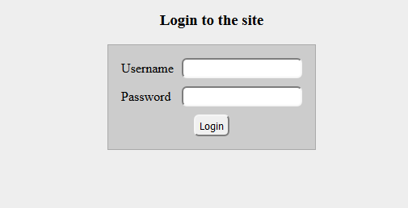

User module
The user module enables the user registration and login system.
The global $user object
The user module provides a global $user object which is always representing the user currently visiting the site.
You can use this object anywhere in your codes by declare global $user.
Note: In codes run earlier than user identifying the $user object may be uninitialized.
You can check the value of $sys_data->sys_status. If the value is greater
than STATUS_INIT_CALLED the user subsystem is started.
The global $user object contains:
$user->uid- The numeric identifier of the user. There is a special value of uid:
0Unauthenticated user. If the user not logged in the uid will be zero.- Other values than zero is assigned to authenticated users.
- The numeric identifier of the user. There is a special value of uid:
$user->auth- This value is
trueorfalse. The value istrueif the user is authenticated.
- This value is
$user->login- Contains the login name of the current user
$user->name- Contains the full name of the current user
$user->role- Contains the role of the current user. The values can be the following (defines) :
ROLE_NONERole of the non authenticated users.ROLE_ADMINRole of the system administrator.ROLE_EDITORAn intermediate role between the authenticated user and the site administrator.ROLE_USERRole of a normal authenticated user.
- Contains the role of the current user. The values can be the following (defines) :
$user->login_disabled- If this field is true the user cannot login into the site.
Example of using $user:
function showuser_page()
{
global $user;
ob_start();
if($user->auth)
{
print $user->name. " is logged in.<br/>";
print "(Login name: ".$user->login.", Uid:".$user->uid.")<br/>";
if($user->role == ROLE_ADMIN)
{
print "Hello admin, what should we do today?<br/>";
print l("Add a new user","node/user/add")."<br/>";
}
}
else
print "The current user is not logged in.";
return ob_get_clean();
}
Login and logout
There is two special location (internal url) which is a login and a logout page. In case your site does not have login/logout pages this location is always available for login and logout.
user/login- The user login page (Try out user/login)user/logout- The user logout page (Try out user/logout)
Print a login link to the page:
print l("Login","user/login");
The login page looks like this way:

Note: There is a user/whoami location which shows the name of the currently authenticated user.
Node2: There is a user/mypasswordchange location where the current logged user
can change the password if the $user_module_settings->enable_own_passwordchange site settings is enabled.
You can also login and logout users from your php codes. In case your site have custom login form, you can use the following functions to start a login:
user_login($login,$password)
Try to login the user. It returns 1 if the user is success logged in otherwise 0.
This function do a permanent login, if success the user stay logged in until logout or some timeout reached.
user_logout()
Logs out the current user. It returns 1 if success log out otherwise 0.
user_load($identifier,$type)
Loads the specified user without checking any credentials.
This function does one time user load, the result won't be permanent. (The next page will forget this)
The $identifier parameter has to be an UID or Login name according to the value of $type which
can be "uid" or "login".
user_unload()
Unloads the current logged user.
This won't logout the current user just restore the $user object to unauthenticated state.
Notes about login and logout
No matter what kind of login or logout is used there is some common features:
- The
global $userobject is immediately changed when the operation is done. - There is some hook which are automatically invoked
HOOK_user_logged_ininvoked immediately after the user is logged inHOOK_user_failed_logininvoked after unsuccessful login. It receives the failed login name, and a description text.HOOK_user_logoutinvoked before the user logged out.HOOK_user_identifiedinvoked every time when the $user object is loaded (or reloaded).HOOK_blocked_client_rejectedinvoked when a client login or password change action is rejected because the client is blacklisted.HOOK_passwordchange_failedinvoked when a user try to change the password and the operation is failed.
This sample code below logs every user authentication event to a file:
global $logfile;
$logfile = '/var/log/codkep_auth.log';
function hook_mymodule_user_failed_login($login,$descr)
{
global $logfile;
file_put_contents($logfile,date("Y-m-d_H.i.s").": $login: $descr\n",FILE_APPEND);
}
function hook_mymodule_user_logout()
{
global $logfile;
global $user;
file_put_contents($logfile,date("Y-m-d_H.i.s").": ".$user->login.": Logout.\n",FILE_APPEND);
}
function hook_mymodule_user_logged_in()
{
global $logfile;
global $user;
file_put_contents($logfile,date("Y-m-d_H.i.s").": ".$user->login.": Successful logged in.\n",FILE_APPEND);
}
function hook_mymodule_blocked_client_rejected($msg)
{
global $logfile;
file_put_contents($logfile,date("Y-m-d_H.i.s").": ".$msg."\n",FILE_APPEND);
}
function hook_mymodule_passwordchange_failed($login,$msg)
{
global $logfile;
file_put_contents($logfile,date("Y-m-d_H.i.s").": ".$login.": ".$msg."\n",FILE_APPEND);
}
Managing users
The users are represent as nodes in CodKep.
As a result of this managing users is same that managing nodes.
The user nodes have node type "user".
There is some special location (internal url) which can manage users by forms. (These all manage users as nodes)
node/user/add- Add a new user (Try out node/user/add)node/NID- View the user's data. The NID is a Node IDentifier.node/NID/view- View the user's data.node/NID/edit- Edits the user's data.node/NID/delete- Delete the user.
Manage users from php codes
Create a new user:
$u = node_create("user");
$u->name = "John Connor";
$u->login = "jconn";
$u->password = scatter_string_local("let0me0in");
$u->insert();
print "User ".$u->name." is created with nid:".$u->node_nid;
Loads the user and change the role to admin
$u = node_load_intype($uid,'user'); // OR: $u = node_load($nid);
$u->role = ROLE_ADMIN;
print "I will save ".$u->name." as administrator!";
print "(Node nid is ".$u->node_nid.")";
$u->save();
Delete a user
$u = node_load($nid); // OR: $u = node_load_intype($uid,'user');
$u->remove();
Note: The login name and password fields are restricted to 128 byte length and have security class "text3ns"!
Helper functions
require_auth()
If an unauthenticated user reaches a page with this function it will be redirected to the login page.
user_login_block()
This function can used as block callback function to make a simple login block.
For example you can create a simple login block in right sidebar with this code:
function hook_a_sitearea_sidebar_right()
{
$def = [];
$def[] = [
'name' => 'MyLoginBlock',
'index' => 1,
'callback' => 'user_login_block',
];
return $def;
}
To understand this code above read the theme documentation.
This block uses ajax to log in and log out.
When an operation is successful the CodKep will invoke the HOOK_user_ajax_logged_in or
HOOK_user_ajax_logout hooks
which called in ajax handler so be used to refresh some page parts depends on user authentication.
CodKep session data
You can store some data assigned to the CodKep session system.
This completely separated from the Browser/php ($_SESSION) session.
All data stored this way is located in SQL database and live together with the authentication.
It means that every data is dropped with a logout.
The name of the variable to store this data is $codkep_session. It is an associative array.
The data of this variable is not stored automatically.
You can make the changes to permanent with the codkepsession_store_local() function.
The values stored in database are automatically loaded together with user authentication data.
codkepsession_store_local()
Store the data of the $codkep_session to the database.
Example of using $codkep_session
function show_something()
{
global $codkep_session;
...
print show_item_by_code($codkep_session['currentitem']);
...
}
function change_current_item($to_code)
{
global $codkep_session;
$codkep_session['currentitem'] = $to_code;
codkepsession_store_local();
}
Note: You cannot use this CodKep session system in case you use different authentication system set by user...callback settings.
Settings of user module
The user module have some settings which can set in site settings.
Note: You have to put global $user_module_settings before modify any settings.
| name | default | description |
|---|---|---|
$user_module_settings->enable_own_passwordchange | true | Enables the built in user/mypasswordchange location to change the password of current logged in user. (It asks the current password to change it.) |
$user_module_settings->enable_admin_passwordchange | false | Enables the built in user/UID/passwordchange location for the administrator role users to change the password of the given UID user. |
$user_module_settings->session_timeout_sec | 28800 | The user will be kicked out after this time of inactivity. In sec. (default 8 hour, 0 means disabled) |
$user_module_settings->login_timeout_sec | 0 | The user will be kicked out after this time from login In sec. (0 means disabled) |
$user_module_settings->login_garbagecoll | 28800 | The inactive sessions (not logged out) will be deleted after this time of inactivity. In sec. (default 8 hour, 0 means disabled) |
$user_module_settings->keychange_interval_sec | 300 | The CodKep will do automatic key change in auth cookies. In sec. (default 5 min, 0 means disabled) |
$user_module_settings->disable_remote_blocking | false | If true disables the entire ip blocking mechanism. Should use for example the $_SERVER['REMOTE_ADDR'] gives false value because of some reverse proxy and there is no other way to detect client ip. (See srv_remoteaddr_spec settings in install section.) |
$user_module_settings->faillogin_block_count | 3 | The client ip will be blocked after this time of failed login count. |
$user_module_settings->faillogin_block_exipire_sec | 3600 | The client ip block will be released after this time. In sec. (default 1 hour) |
$user_module_settings->password_complexity_check | false | If this variable is true the user module will do complexity check on new passwords. |
$user_module_settings->password_complexity_minlength | 20 | If the new password complexity check is enabled the minimum password length will be this value. |
$user_module_settings->password_complexity_minlower | 2 | If the new password complexity check is enabled the password have to contains minimum lowercase letters set here. |
$user_module_settings->password_complexity_minupper | 2 | If the new password complexity check is enabled the password have to contains minimum uppercase letters set here. |
$user_module_settings->password_complexity_minnumber | 2 | If the new password complexity check is enabled the password have to contains minimum numeric letters set here. |
$user_module_settings->password_complexity_cplx | true | If the new password complexity check is enabled the password have to pass a complexity check. (Based on gzip) |
$user_module_settings->password_complexity_checkerfnc | NULL | You can completely replace the password complexity check function by your callback set here. |
$user_module_settings->password_scattered | true | Whether CodKep store plaintext or scattered passwords in the database. (false:plaintext) |
$user_module_settings->password_scatter_salt | random string | You can define a custom salt to scatter passwords. Warning: The stored passwords will corrupt if changed. |
$user_module_settings->password_scatter_log2i | 14 | The complexity of password scattering. Larger is more complex. |
$user_module_settings->form_salt | random string | You can define a custom salt to login form check. Recommended to change the default value in production environments. |
$user_module_settings->define_user_nodetype | true | Whether the user module should define the user node type. Disable this, if you have custom user tables. |
$user_module_settings->login_title | 'Login to the site' | The welcome message of the user/login page. |
$user_module_settings->login_location | 'user/login' | The require_auth() function will redirect unauthenticated users here. |
$user_module_settings->user_login_callback | NULL | You can set custom login mechanism by set this callback. Default is NULL which means the built in code. |
$user_module_settings->user_logout_callback | NULL | You can set custom logout mechanism by set this callback. Default is NULL which means the built in code. |
$user_module_settings->user_init_callback | NULL | You can set custom user auth/init mechanism by set this callback. Default is NULL which means the built in code. |
$user_module_settings->user_after_callback | NULL | You can set custom login auth-exit/garbage collection by set this callback. Default is NULL which means the built in code. |
This is not a full list, the module contains some more settings for deeper customisation purposes.
Hooks
The following hooks can be implement to interact with user module.
| Hook | Description |
|---|---|
| HOOK_user_identified() | Invoked every time when the $user object is loaded (or reloaded) |
| HOOK_user_logged_in() | Invoked immediately after the user is logged in |
| HOOK_user_logout() | Invoked before the user logged out |
| HOOK_user_failed_login($login,$descr) | Invoked after unsuccessful login |
| HOOK_user_ajax_logged_in() | Invoked in ajax handler when the user is logged in |
| HOOK_user_ajax_logout() | Invoked in ajax handler when the user is logged out |
| HOOK_blocked_client_rejected($msg) | Invoked when a client login or password change action is rejected because the client is blacklisted. |
| HOOK_passwordchange_failed($login,$msg) | Invoked when a user try to change the password and the operation is failed. |